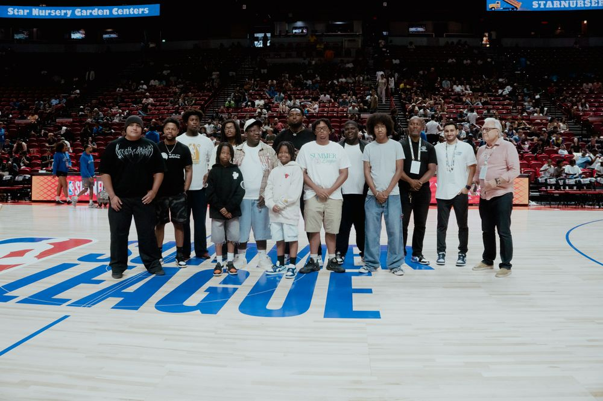
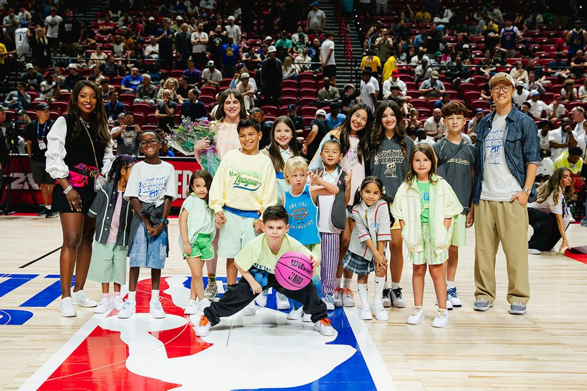
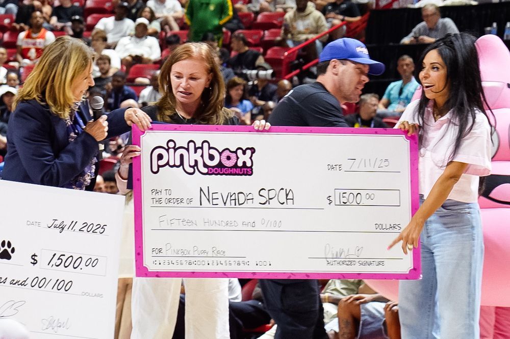
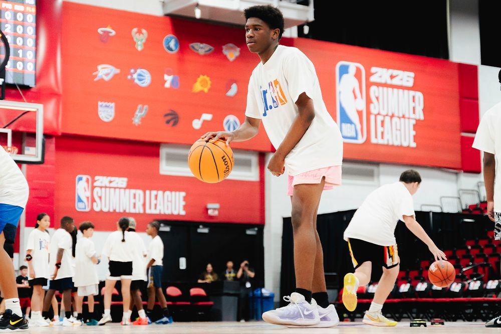
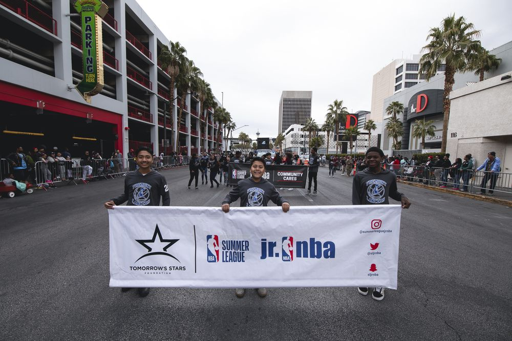
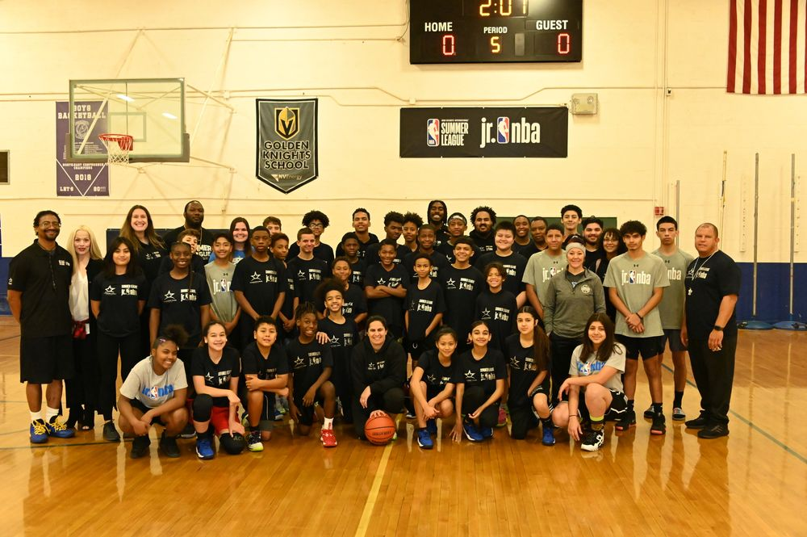

2026 So Far: A Recap of the Year in Motion
Three new flagship programs, a summer basketball camp with NBA coaches, and another year of TSF youth on the floor at NBA Summer League.
Read more →
Home / Updates
Recaps, milestones, and news from Tomorrow’s Stars Foundation programming across Southern Nevada, newest first.

Three new flagship programs, a summer basketball camp with NBA coaches, and another year of TSF youth on the floor at NBA Summer League.
Read more →
Youth learn to build and play their own video games through code, then bring them to the NBA Summer League stage.
Read more →
Directing, camera, lighting, sound, and production inside a working studio, culminating in a broadcast-ready commercial.
Read more →
Hands-on exposure to sports medicine and surgical careers, taught by working clinicians during NBA Summer League.
Read more →
TSF founding member and director Carole Adams Hattar was recognized by Mayor Shelley Berkley, honoring more than 25 years of service and leadership.
Read more →
Arts and media training, 100+ student performers at NBA Summer League, a first-ever military internship, STEAM clinics, and 40+ community leaders honored.
Read more →
At halftime of Nets vs. Wizards, the Thomas & Mack Center became a runway as The Sunday Collective presented its debut children’s fashion show.
Read more →
The first-ever Pinkbox Puppy Race featured six puppies racing across the court, raising awareness for pet adoption and supporting the Nevada SPCA.
Read more →
In partnership with the 4th Family Foundation, TSF co-hosted the Jr. NBA STEM Kids Clinic, bringing together 50 young athletes ages 11–14.
Read more →Anthem Idol winner Jasmine McCormick performed the National Anthem. With CCSD, TSF invited 30 students ages 10–17 to audition before nine professional judges.
Read more →
TSF marched in its ninth consecutive year at the 38th annual MLK march in Las Vegas, over 150 strong, with the Pure Joy Choir performing the full 1.5-mile route.
Read more →
Students from Fremont Middle School, Roy Martin Middle School, and Summer League Jr. NBA joined a holiday basketball camp led by Derek Niggemeier.
Read more →Newsletter
One email when something worth sharing happens. No noise.
Demo recreation — the newsletter form does not transmit anything.